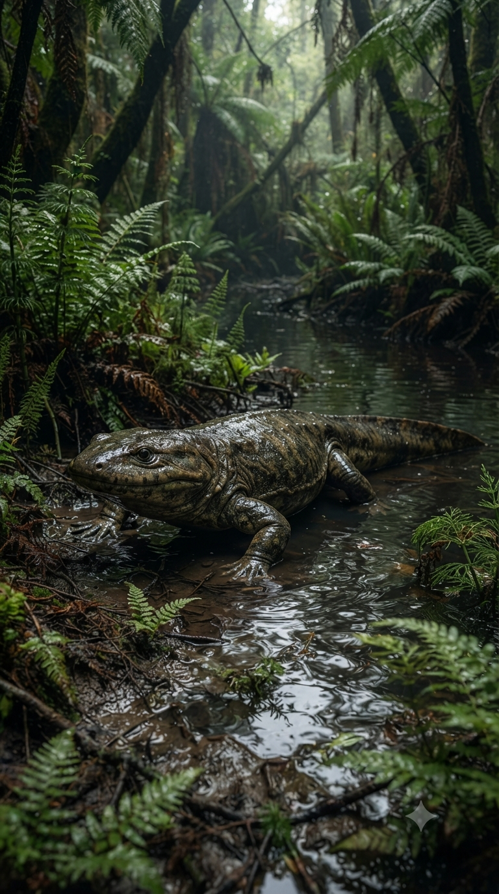
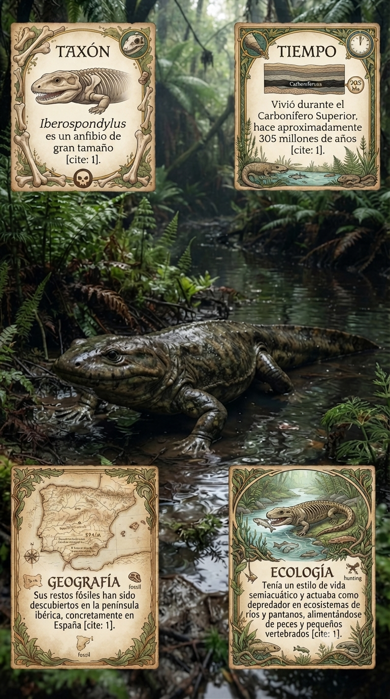
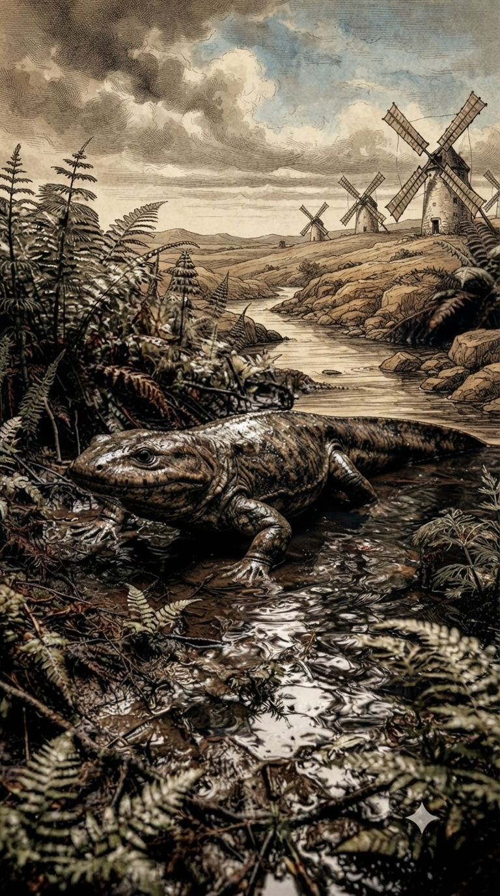
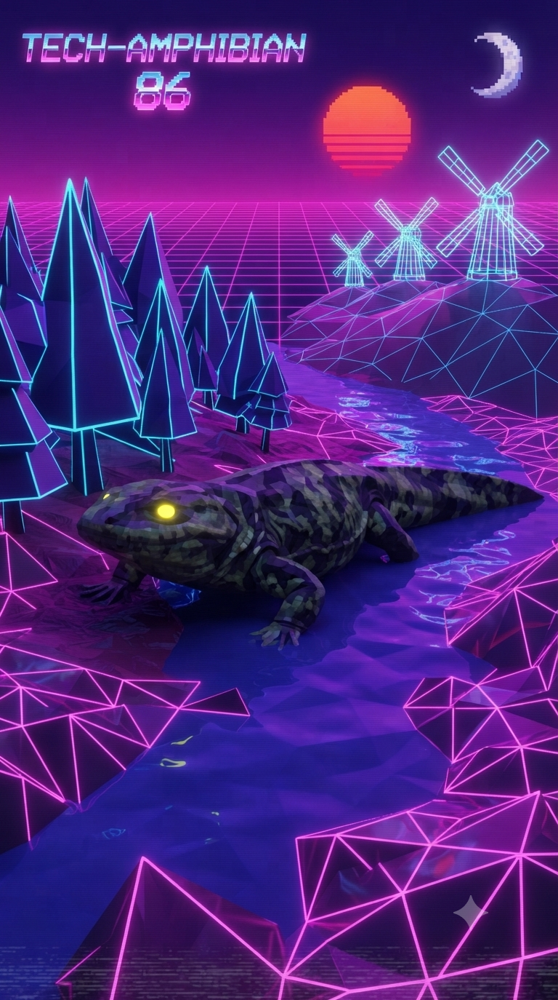

Paleoficha de PalEntropía

▶ Haz clic sobre la imagen para ver el Short oficial en YouTube.



TAXÓN: Iberospondylus schultzei
CLADO: Tetrapoda (Temnospondyli, Euskelia)
DIETA: Carnívoro / Piscívoro. Depredador semiacuático que capturaba peces y pequeños tetrápodos mediante una mordida rápida con dientes cónicos adaptados para sujetar presas resbaladizas.
TAMAÑO: Longitud corporal estimada entre 1,5 y 2 metros. Cráneo ancho y robusto, característico de los grandes temnospóndilos basales.
LOCOMOCIÓN: Desplazamiento cuadrúpedo en tierra con marcha lenta y natación mediante ondulación del cuerpo y propulsión de la cola en ambientes fluviales y pantanosos.
TIEMPO: Carbonífero Superior (Pennsylvaniense, Kasimoviense; aproximadamente 305 millones de años).
GEOGRAFÍA: Península Ibérica. Hallado en la Formación San Pedro (Provincia de León, España).
EQUIVALENCIA PALEOGEOGRÁFICA: Llanuras ecuatoriales del supercontinente Pangea, situadas próximas a extensos sistemas fluviales y humedales tropicales.
AMBIENTE PALEOECOLÓGICO: Ecosistemas de ríos de baja energía, lagunas y pantanos con abundante vegetación formada por licófitas arborescentes, helechos y esfenófitas gigantes.
ECOLOGÍA:
- Flora: Bosques pantanosos dominados por Lepidodendron, Sigillaria, Calamites y grandes helechos.
- Fauna secundaria: Peces de agua dulce, artrópodos gigantes, primeros reptiles y otros anfibios temnospóndilos.
- Nicho ecológico: Depredador semiacuático de tamaño medio-alto que permanecía oculto en aguas someras esperando el paso de sus presas.
- Relaciones: Representa uno de los temnospóndilos más primitivos conocidos de Europa y constituye una pieza clave para comprender el origen y la diversificación temprana de este importante linaje de tetrápodos.
CLIMA: Tropical cálido y muy húmedo, con elevada pluviosidad estacional y extensas áreas pantanosas características del Carbonífero Superior.
ESTADO ECOLÓGICO: Extinto. Su registro fósil proporciona información fundamental sobre la evolución de los primeros grandes anfibios y sobre la diversificación inicial de los temnospóndilos en Europa occidental.